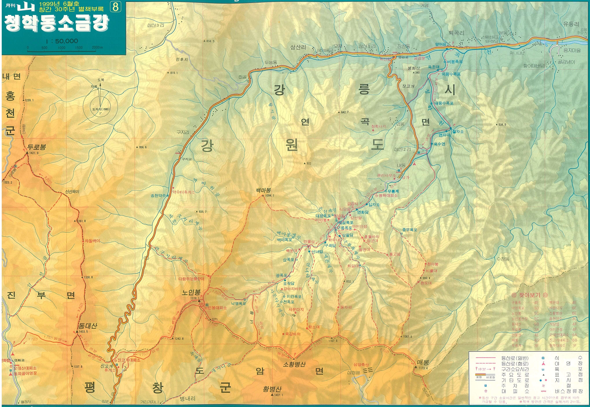
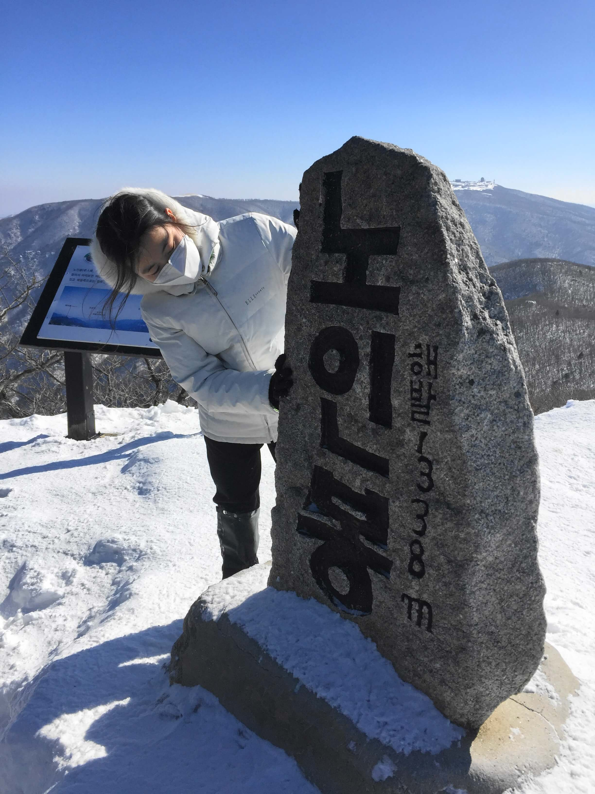
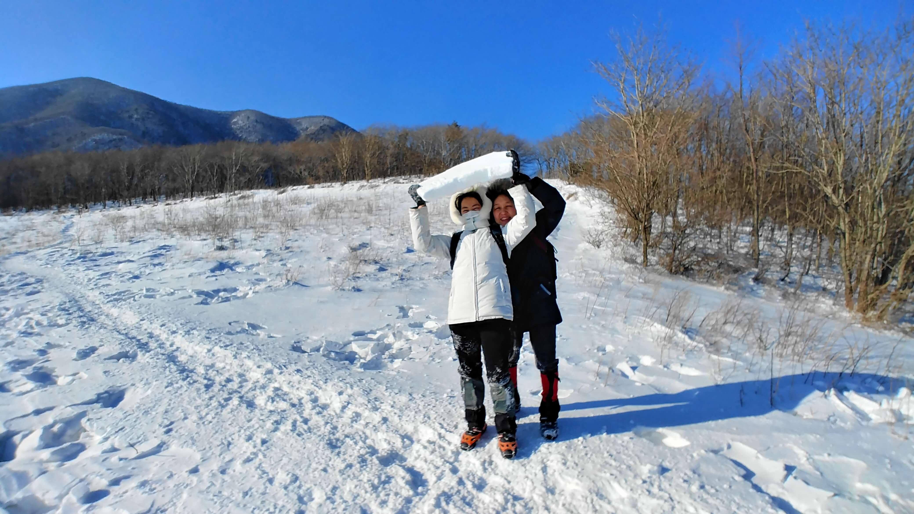
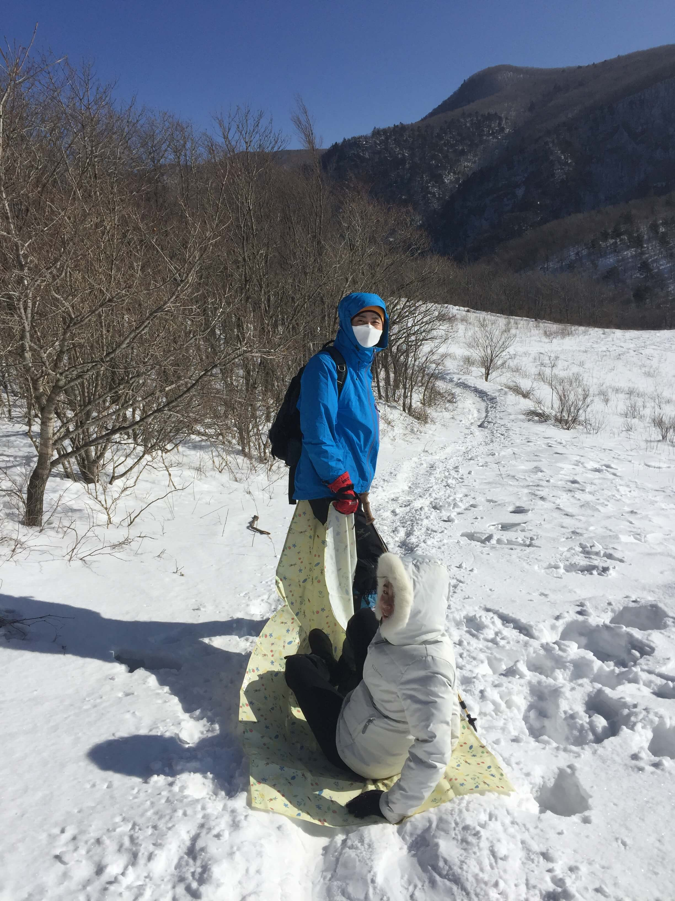

2020년
02월 09일 |
진고개정상 휴게소, 고위평탄면, 노인봉, 노인봉 무인대피소, 진고개 |
노인봉
오대산 국립공원의 주요 봉우리 중 하나.
정상은 기묘하게 생긴 화강암 봉우리이며, 멀리서 바라보면 백발노인과 같이 보인다 하여 노인봉이라 불린다.
노인봉 정상에서의 탁 트인 전망이 압권이다. 완만한 백두대간 능선을 따라 레이다 공군기지가 있는 황병산과 그 너머에 풍력발전기가 보이는 삼양목장,
하늘인지 바다인지 구분이 안되는 동해바다 (미세먼지로 더욱 구분이 안됨), 강릉시, 첩첩산중의 산세, 그 뒤에 우뚝 솟은 설악산, ... 눈과 가슴을 시원하게 해 준다.

|

|
|
노인봉에서 바라본 황병산과 백두대간(좌), 정상석(우)
|
진고개, 고위평탄면
진고개라는 지명은 비가 오면 땅이 질어진다고 하는 것과 길이가 긴 고개라는 두 가지 유래가 있다.
진고개 정상에는 넓고 평탄한 지형이 형성되어 있어 보는 사람을 깜짝 놀라게 만든다.
주변 1500 여 미터의 봉우리들 사이에 있는 평지라 더욱 신기하고 이국적인 모습이다. 인터스텔라에 나왔던 외계 행성의 모습이 떠오른다.
이곳은 고위평탄면 지형으로, 먼 옛날 한반도가 평평한 지형이었다는 증거이다.
지각운동을 통해 동쪽이 좀 더 높이 솟아 올라 지금의 동고서저 지형이 되었다.
|

|

|
|
평탄면에 쌓인 눈덩이 (좌), 평탄면에서의 눈 썰매 타기 (우)
|
러셀 (Russell): 등산에서 선두에 서서 눈을 쳐내고 길을 다지면서 앞으로 나아가는 일
미국의 철도 제설기 회사인 Russell Snow Plow Company에서 유래한 말이다.
즉, 고유명사가 일반명사가 된 콩글리시로 생각되며 영어 번역은 아직 찾지 못했다.
러셀 제설기는 얼마전까지 알래스카 등지에서 사용된 것으로 확인 된다.
러셀 흉내를 내 보았다. 잠깐 동안의 러셀과 눈 밭에서 뒹구는 것은 즐겁기만 하다.
느낀 점, 배운 것
- 겨울 왕국을 제대로 느끼고 왔다.
- 눈 썰매는 봅슬레이를 생각나게 할 정도로 재미있다.
- 20년 전과 비교하여 노인봉 오르는 길이 좀 더 편하게 바뀌었다. 전에는 정상으로 직접 치고 올랐으나, 지금은 산비탈을 옆으로 돌아서 오르게 되어 있다.
- 진고개정상 휴게소의 감자떡은 정말 맛있다. 흰색 팥 앙꼬가 단맛을 내고, 투명한 감자 반죽의 쫄깃한 식감이 정말 좋다. 이십전 대보탕은 많이 쓰다.
- 진부 시내의 동해루 중식당은 맛집이다. 탕수육도 바삭하고, 짬뽕 국물도 시원하고, 조미료 맛도 별로 없다.
- 푸드카페 김밥천국 신논현점은 가지 말자. 조미료 덩어리다. 단무지를 빼면 그나마 낫다.
- 장원김밥 강남역점 영업 시간 확인하자.
소금강
대한민국 명승 1호. 다음에 꼭 가보자~!!